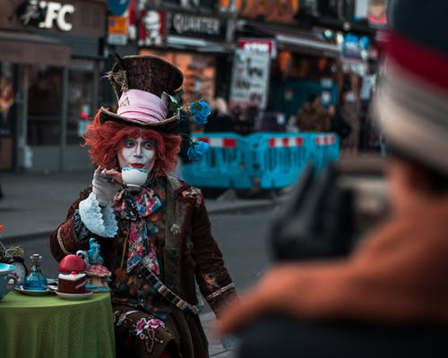
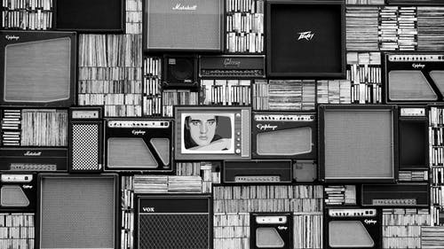
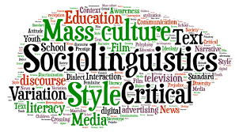
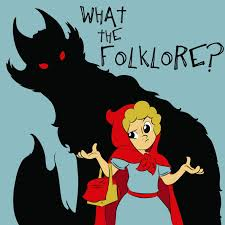

ABOUT POP CULTURE
Popular culture
(also called mass culture and pop culture) is generally recognized by
members of a society as a set of the practices, beliefs, and objects that
are dominant or prevalent in a society at a given point in time. Popular
culture also encompasses the activities and feelings produced as a result
of interaction with these dominant objects. Heavily influenced in modern
times by mass media, this collection of ideas permeates the everyday lives
of people in a given society. Therefore, popular culture has a way of
influencing an individual's attitudes towards certain topics. However,
there are various ways to define pop culture. Because of this, popular
culture is something that can be defined in a variety of conflicting ways
by different people across different contexts. It is generally viewed in
contrast to other forms of culture such as folk culture, working-class
culture, or high culture, and also through different theoretical
perspectives such as psychoanalysis, structuralism, postmodernism, and
more. The most common pop-culture categories are: entertainment (such as
film, music, television and video games), sports, news (as in
people/places in the news), politics, fashion, technology, and slang.

Popular culture in the West has been critiqued for its being a system of
commercialism that privileges products selected and mass-marketed by the
upper-class capitalist elite; such criticisms are most notable in many
Marxist theorists such as Marcuse, Adorno, Horkheimer, Gramsci, Debord,
Jameson, Eagleton, as well as certain postmodern philosophers such as
Lyotard, who has written about the commercialisation of information under
capitalism, and Baudrillard, as well as others.
The term "popular culture" was coined in the 19th century or
earlier.Traditionally, popular culture was associated with poor education
and with the lower classes, as opposed to the "official culture" and
higher education of the upper classes. Victorian-era With the rise of the
Industrial Revolution in the eighteenth and nineteenth centuries, Britain
experienced social changes that resulted in increased literacy rates, and
with the rise of capitalism and industrialisation, people began to spend
more money on entertainment, like the commercial idea of pubs and sports.
Reading also gained traction.
A growing consumer culture and an increased capacity for travel via the
newly-invented railway (the first public railway, Stockton and Darlington
Railway, opened in north-east England in 1825) created both a market for
cheap popular literature, and the ability for its distribution on a large
scale.

From the end of World War II, following major cultural and social changes
brought by mass media innovations, the meaning of popular culture began to
overlap with those of mass culture, media culture, image culture, consumer
culture, and culture for mass consumption. Social and cultural changes in
the United States were a pioneer in this with respect to other western
countries. Although terms "pop" and "popular" are in some cases used
interchangeably, and their meaning partially overlap, the term "pop" is
narrower. Pop is specific of something containing qualities of mass
appeal, while "popular" refers to what has gained popularity, regardless
of its style.
DEFINITION:
The quantitative definition of culture has the problem that much "high
culture" (e.g., television dramatizations of Jane Austen) is also
"popular." "Pop culture" is also defined as the culture that is
"leftover" when we have decided what high culture is.A third definition
equates pop culture with "mass culture" and ideas. This is seen as a
commercial culture, mass-produced for mass consumption by mass media.
From a Western European perspective, this may be compared to American
culture.

"Pop culture" can be defined as an "authentic" culture of the people,
but this can be problematic as there are many ways of defining the
people. A postmodernist approach to popular culture would "no longer
recognize the distinction between high and popular culture."
Popular culture is constantly evolving and occurs uniquely in place and
time. It forms currents and eddies, and represents a complex of mutually
interdependent perspectives and values that influence society and its
institutions in various ways. For example, certain currents of pop
culture may originate from, (or diverge into) a subculture, representing
perspectives with which the mainstream popular culture has only limited
familiarity. Items of popular culture most typically appeal to a broad
spectrum of the public. Important contemporary contributions for
understanding what popular culture means have been given by the German
researcher Ronald Daus, who studies the impact of extra-European
cultures in North America, Asia, and especially in Latin America.
LEVELS:

Within the realm of popular culture, there exists a organizational
culture. From its beginning, popular culture has revolved around classes
in society and the push-back between them. Within popular culture, there
are three levels that have emerged, high and low. High culture can be
described as art and works considered of superior value, historically,
aesthetically and socially. Low culture is regarded by some as that of
the lower classes, historically.
know more
FOLKLORE:

Adaptations based on traditional folklore provide a source of popular
culture. This early layer of cultural mainstream still persists today,
in a form separate from mass-produced popular culture, propagating by
word of mouth rather than via mass media, e.g. in the form of jokes or
urban legends. With the widespread use of the Internet from the 1990s,
the distinction between mass media and word-of-mouth has become blurred.
Although the folkloric element of popular culture engages heavily with
the commercial element, communities amongst the public have their own
tastes and they may not always embrace every cultural or subcultural
item sold. Moreover, certain beliefs and opinions about the products of
commercial culture may spread by word-of-mouth, and become modified in
the process and in the same manner that folklore evolves.
know more
GO TO:
YOUR VIEWS WOULD BE APPRECIATED!!
Copyright ©2020 by Shristi Mohapatra